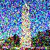
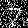
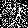
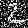
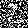
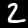

For this project we will be using the DeepFloyd IF Diffusion model. DeepFloyd is a 2 stage model
where
the first stage produces a 64x64 image and the second stage uses the outputs of the first model
to
generate images of size 256x256. Below I have put the outputs from the images using 20 and 200
different
inference steps.
Model Outputs (Low Inference Steps)
Here are the outputs of the stage 1 model using 20 inference steps.
An oil painting of a snowy mountain villageA man wearing a hatA rocket ship
Here are the outputs of the stage 2 model using 20 inference steps.
An oil painting of a snowy mountain villageA man wearing a hatA rocket ship
Model Outputs (High Inference Steps)
Here are the outputs of the stage 1 model using 200 inference steps.
An oil painting of a snowy mountain villageA man wearing a hatA rocket ship
Here are the outputs of the stage 2 model using 200 inference steps.
An oil painting of a snowy mountain villageA man wearing a hatA rocket ship
Quality of the Outputs
The stage one models, as expected, were lower resolution compared to the stage 2 outputs.
However, there
was quite a substantial difference between the quality of the outputs while using 200 inferences
steps
versus using only 20. Using a higher number of inference steps led to an image with a lot more
detail.
There were a lot of small details that made the images look a lot more realistic with more
steps. The
oil painting of a snowy mountain village had building facades with small snow spots on it. The
rocket
ship had a more realistic rocket exhaust that had a mixture of colors, and was not just a simple
red
line. Furthermore, the rocket even had a small reflection of some celestial body on the window.
However,
the biggest difference was with the man wearing a hat. The diffusion model with 200 inference
steps was
able to generate a very realistic looking man. In the smaller inference steps output, the man's
eyes
were clearly not aligned, furthermore the man had idealized skin without any imperfections which
leads
to an unrealistic look. The hat on his had was also not properly aligned, the man's head is
slightly
tilted, but the hat is perfectly flat. With more inference steps, there was a lot more detail in
the
final image. The man has a more realistic beard and skin, the hat fits his head properly and has
proper
creases that mimics how a hat would sit on a head. Furthermore, the smaller details of his bust
such as
wrinkles, freckles, and eye bags all make him look a lot more realistic.
I used the random seed 23 while running the model.
Part 1: Sampling Loops
1.1 Implementing the Forward Process
What is the Forward Process
The forward process takes a clean image and adds noise to it. The amount of noise is based on the
parameter t,
where a low t means a less noisy image and a higher t is a more noisy. The specific way we add
noise to the image
is defined by the following equation. alpha_t here is determined by the developers of
DeepFloydIf and is used to
determine the ratio of original image to noise added.
Equation to calculate x_t (the noisy image) given alphas_cumprod[t]
Forward Process Results
Original Campanile

Noisy Campanile at t=250Noisy Campanile at t=500Noisy Campanile at t=750
1.2 Classical Denoising
Previously in the class, we used low pass filters in order to remove noise from an image.
However, due to the
large amounts of noise in these (as is visible in the campanile noised at t=750), the results
are not very good.
Noisy Images
Original CampanileNoisy Campanile at t=250Noisy Campanile at t=500Noisy Campanile at t=750
Gaussian Blurring Results
Gaussian blurred Campanile at t=250Gaussian blurred Campanile at t=500Gaussian blurred Campanile at t=750
1.3 One-step Denoising
We will now use a pretrained diffusion model in order to recover the gaussian noise and clean up
our campenile image.
Below are my results using the one step denoising of the prebuilt diffusion model.
Noisy Images
Original CampanileNoisy Campanile at t=250Noisy Campanile at t=500Noisy Campanile at t=750
One Step Denoising Results
One Step Denoised Campanile at t=250One Step Denoised Campanile at t=500One Step Denoised Campanile at t=750
1.3 One-step Denoising
These diffusion models were not trained in order denoise super noisy images back to the natural
image manifold
in one step. They are much better at iteratively denoising the images across multiple steps. We
can use this, to
iteratively denoise our noisy images back onto this natural manifold. Below are the results
doing so.
Iteratively Denoised Images
Iteratively Step Denoised Campanile at t=690Iteratively Step Denoised Campanile at t=540Iteratively Step Denoised Campanile at t=390Iteratively Step Denoised Campanile at t=240Iteratively Step Denoised Campanile at t=90
Below is a illustartion showing the foll iterative denoising process in work
1.5 Sampling from Diffusion Model
We can now sample random images from the diffusion model by passing in random noise instead of
our
original noised campenile. Below are 5 random outputs
Sampled Images
Gifs Showing Sampling Process
1.6 Classifier Free Guidance
The quality of the images that were generated in the previous image where not very good. To
improve this
we implement classifier free guidance that allows us to generate higher quality images using
both a conditional
and unconditional outputs and scaling our noise to be a linear extrapolation of the 2. Below are
my samples
using CFG.
Sampled Images
Gifs Showing Sampling Process
1.7 Image to Image Translation
We can use this sampling loop to edit our images by adding some noise, and then using the
diffusion model to
cast this noisy image back onto the natural manifold of images. Below are my reuslts
Original Images
Original CampanileOriginal JJ McCarthyOriginal Frog
Image to Image translation of Campanile
Campanile at starting_index = 1Campanile at starting_index = 3Campanile at starting_index = 5Campanile at starting_index = 7Campanile at starting_index = 10Campanile at starting_index = 20
Campanile at starting_index = 1Campanile at starting_index = 3Campanile at starting_index = 5Campanile at starting_index = 7Campanile at starting_index = 10Campanile at starting_index = 20
Image to Image translation of JJ McCarthy
JJ McCarthy at starting_index = 1JJ McCarthy at starting_index = 3JJ McCarthy at starting_index = 5JJ McCarthy at starting_index = 7JJ McCarthy at starting_index = 10JJ McCarthy at starting_index = 20
JJ McCarthy at starting_index = 1JJ McCarthy at starting_index = 3JJ McCarthy at starting_index = 5JJ McCarthy at starting_index = 7JJ McCarthy at starting_index = 10JJ McCarthy at starting_index = 20
Image to Image translation of Mr. Frog
Frog at starting_index = 1Frog at starting_index = 3Frog at starting_index = 5Frog at starting_index = 7Frog at starting_index = 10Frog at starting_index = 20
Frog at starting_index = 1Frog at starting_index = 3Frog at starting_index = 5Frog at starting_index = 7Frog at starting_index = 10Frog at starting_index = 20
Hand Drawn Images
We can do a similar process to what we did in the previous part in order to project hand drawn images
onto what the moel thinks is the natural manifold of images.
Minecraft
Minecraft OriginalSDEEdit of Minecraft starting_index = 1SDEEdit of Minecraft starting_index = 3SDEEdit of Minecraft starting_index = 5SDEEdit of Minecraft starting_index = 7SDEEdit of Minecraft starting_index = 10SDEEdit of Minecraft starting_index = 20
Football
Football OriginalSDEEdit of Football starting_index = 1SDEEdit of Football starting_index = 3SDEEdit of Football starting_index = 5SDEEdit of Football starting_index = 7SDEEdit of Football starting_index = 10SDEEdit of Football starting_index = 20
Football
Beach OriginalSDEEdit of Beach starting_index = 1SDEEdit of Beach starting_index = 3SDEEdit of Beach starting_index = 5SDEEdit of Beach starting_index = 7SDEEdit of Beach starting_index = 10SDEEdit of Beach starting_index = 20
Image Inpainting
This diffusion model sampling is super powerful. We can use it in order to fill in images that are
missing a mask. Below we can see some examples.
Image Inpainting of Campenile
Original CampenileMask of CampenilePart of Image to ReplaceFinal Result
Image Inpainting of Lebron's Block
Original Lebron BlockMask of Lebron BlockPart of Image to ReplaceFinal Result
Image Inpainting of SF Skyline
Original SkylineMask of SkylinePart of Image to ReplaceFinal Result
Text Conditioned Image to Image
We can also add text conditioning to change one image into another image based off of a text prompt
Campenile onto "a rocket ship"
Original CampenileCampanile at starting_index = 1Campanile at starting_index = 3Campanile at starting_index = 5Campanile at starting_index = 7Campanile at starting_index = 10Campanile at starting_index = 20
Lebron's Block onto "an oil painting of a snowy mountain village"
Original Lebron BlockLebron Block at starting_index = 1Lebron Block at starting_index = 3Lebron Block at starting_index = 5Lebron Block at starting_index = 7Lebron Block at starting_index = 10Lebron Block at starting_index = 20
Just a Chill Guy onto "a man wearing a hat"
Original Chill GuyChill Guy at starting_index = 1Chill Guy at starting_index = 3Chill Guy at starting_index = 5Chill Guy at starting_index = 7Chill Guy at starting_index = 10Chill Guy at starting_index = 20
1.8 Visual Anagrams
We can use the diffusion models to do some other cooler things as well. We can at each iterative
denoising step, combine the outputs from one point facing straight and from another point upside
down to get visual anagrams. These images that are generated look like one text prompt facing up and
a different one facing down.
Visual Anagrams
An Oil Painting of People around a CampfireAn Oil Painting of an Old Man
A (rather disturbing) Photo of a manA photo of a dog
An olympics medal ceremonyA photo of the swiss alps
1.9 Hybrid Images
Similar to the previous one, we can use the diffusion model to generate images that look like one
thing
from up close and like a different prompt from farther away. The results can be achieved by low pass
filtering one model output and high pass filtering the other one to get a hybrid image similar to
how we
did in project 2.
Visual Anagrams
A Hybrid of a skull and a waterfallA Hybrid of a rocket ship and a pencilA Hybrid of a dog and the amalfi coast
Part B: The Power of Diffusion Models
Step 1: Training the Unconditional Unet
Noise Addition
Below i put examples of noise below
00.20.40.5

0.6

0.81.0
00.20.40.5

0.60.8

1.0
00.20.40.50.60.81.0
Here is the loss graph for the training process for the unconditional unet
Loss graph of training the model
First Epoch Output
Here are the results after the first epochs
Input imageNoise with sigma in 0.5Denoised by model
Input imageNoise with sigma in 0.5Denoised by model
Input imageNoise with sigma in 0.5Denoised by model
Input imageNoise with sigma in 0.5Denoised by model
Fifth Epoch Output
Here are the results after the first 5 epochs
Input imageNoise with sigma in 0.5Denoised by model
Input imageNoise with sigma in 0.5Denoised by model
Input imageNoise with sigma in 0.5Denoised by model
Input imageNoise with sigma in 0.5Denoised by model
Out-of-distributions output
Here are the results after the first 5 epochs on out of output data
Set 1
00.20.40.50.60.81.0
Denoised with sigma in 0.0Denoised with sigma in 0.2Denoised with sigma in 0.4Denoised with sigma in 0.5Denoised with sigma in 0.6Denoised with sigma in 0.8Denoised with sigma in 1.0
Set 2
00.20.40.50.60.81.0
Denoised with sigma in 0.0

Denoised with sigma in 0.2Denoised with sigma in 0.4Denoised with sigma in 0.5Denoised with sigma in 0.6Denoised with sigma in 0.8Denoised with sigma in 1.0
Set 3
00.20.40.50.60.81.0
Denoised with sigma in 0.0Denoised with sigma in 0.2Denoised with sigma in 0.4Denoised with sigma in 0.5Denoised with sigma in 0.6Denoised with sigma in 0.8Denoised with sigma in 1.0
Step 2: Training the Time Dependent Unet
What's new
Here we are going to train a iterative denosier diffusion model. Below is my loss curve.